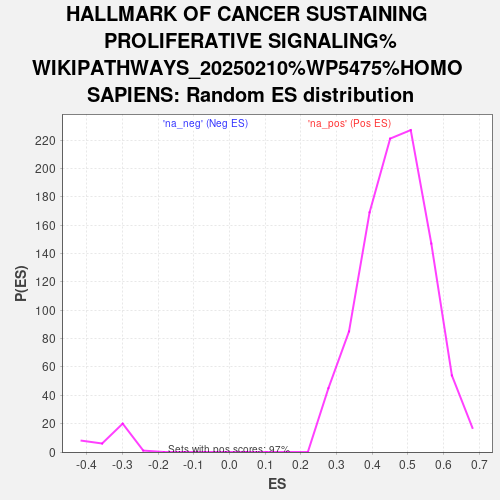

| | | Dataset | DS_vs_CTR_ranked_genelist |
| Phenotype | NoPhenotypeAvailable |
| Upregulated in class | na_pos |
| GeneSet | HALLMARK OF CANCER SUSTAINING PROLIFERATIVE SIGNALING%WIKIPATHWAYS_20250210%WP5475%HOMO SAPIENS |
| Enrichment Score (ES) | 0.8130062 |
| Normalized Enrichment Score (NES) | 1.7421458 |
| Nominal p-value | 0.0 |
| FDR q-value | 6.0168153E-4 |
| FWER p-Value | 0.005 |
Table: GSEA Results Summary
 Fig 1: Enrichment plot: HALLMARK OF CANCER SUSTAINING PROLIFERATIVE SIGNALING%WIKIPATHWAYS_20250210%WP5475%HOMO SAPIENS
Fig 1: Enrichment plot: HALLMARK OF CANCER SUSTAINING PROLIFERATIVE SIGNALING%WIKIPATHWAYS_20250210%WP5475%HOMO SAPIENS
Profile of the Running ES Score & Positions of GeneSet Members on the Rank Ordered List
| SYMBOL | RANK IN GENE LIST | RANK METRIC SCORE | RUNNING ES | CORE ENRICHMENT | | 1 | MAPK3 | 70 | 12.715 | 0.0695 | Yes |
| 2 | CDKN1A | 117 | 11.198 | 0.1311 | Yes |
| 3 | SOS1 | 275 | 8.659 | 0.1758 | Yes |
| 4 | JUN | 277 | 8.649 | 0.2242 | Yes |
| 5 | STAT3 | 404 | 7.517 | 0.2633 | Yes |
| 6 | FLT1 | 459 | 7.175 | 0.3022 | Yes |
| 7 | JUP | 592 | 6.519 | 0.3355 | Yes |
| 8 | KSR1 | 683 | 6.144 | 0.3677 | Yes |
| 9 | NFKBIA | 761 | 5.895 | 0.3989 | Yes |
| 10 | REL | 803 | 5.756 | 0.4301 | Yes |
| 11 | RUNX1T1 | 933 | 5.332 | 0.4568 | Yes |
| 12 | RELA | 938 | 5.327 | 0.4866 | Yes |
| 13 | PML | 973 | 5.242 | 0.5151 | Yes |
| 14 | MAPK1 | 1016 | 5.107 | 0.5427 | Yes |
| 15 | CSF1R | 1256 | 4.599 | 0.5627 | Yes |
| 16 | IGF1R | 1326 | 4.474 | 0.5860 | Yes |
| 17 | SOS2 | 1348 | 4.434 | 0.6104 | Yes |
| 18 | BCL9 | 1443 | 4.242 | 0.6318 | Yes |
| 19 | RAF1 | 1556 | 4.071 | 0.6519 | Yes |
| 20 | FOXO1 | 1776 | 3.733 | 0.6675 | Yes |
| 21 | INSR | 1937 | 3.539 | 0.6834 | Yes |
| 22 | MAP2K1 | 2155 | 3.329 | 0.6968 | Yes |
| 23 | PYGO1 | 2162 | 3.325 | 0.7153 | Yes |
| 24 | MYC | 2499 | 3.012 | 0.7240 | Yes |
| 25 | PTEN | 2576 | 2.955 | 0.7387 | Yes |
| 26 | KIT | 2835 | 2.771 | 0.7479 | Yes |
| 27 | KDR | 3147 | 2.547 | 0.7546 | Yes |
| 28 | MDM2 | 3208 | 2.506 | 0.7672 | Yes |
| 29 | SHC1 | 3325 | 2.429 | 0.7780 | Yes |
| 30 | EPHA2 | 3403 | 2.396 | 0.7895 | Yes |
| 31 | FLT4 | 3514 | 2.331 | 0.7999 | Yes |
| 32 | ZBTB16 | 3912 | 2.142 | 0.8022 | Yes |
| 33 | SRC | 4270 | 1.995 | 0.8047 | Yes |
| 34 | CSNK1A1 | 4724 | 1.826 | 0.8039 | Yes |
| 35 | GRB2 | 4767 | 1.811 | 0.8130 | Yes |
| 36 | TCF3 | 5937 | 1.470 | 0.7928 | No |
| 37 | EGFR | 7750 | 1.077 | 0.7547 | No |
| 38 | CTNNB1 | 8948 | 0.883 | 0.7304 | No |
| 39 | KRAS | 9727 | 0.795 | 0.7160 | No |
| 40 | PIK3CD | 11868 | 0.552 | 0.6669 | No |
| 41 | NFKB1 | 13063 | 0.469 | 0.6405 | No |
| 42 | FOS | 13329 | 0.441 | 0.6365 | No |
| 43 | LRP5 | 15774 | 0.259 | 0.5784 | No |
| 44 | BRAF | 15836 | 0.254 | 0.5783 | No |
| 45 | CHUK | 15912 | 0.248 | 0.5779 | No |
| 46 | TSC2 | 17443 | 0.132 | 0.5414 | No |
| 47 | DEPTOR | 17588 | 0.124 | 0.5385 | No |
| 48 | GAREM2 | 18168 | 0.091 | 0.5249 | No |
| 49 | NFKBIE | 18546 | 0.066 | 0.5161 | No |
| 50 | RHEB | 19023 | 0.037 | 0.5047 | No |
| 51 | AKT3 | 19047 | 0.036 | 0.5044 | No |
| 52 | FLT3 | 19180 | 0.029 | 0.5013 | No |
| 53 | LRP6 | 19257 | 0.026 | 0.4996 | No |
| 54 | SALL4 | 19387 | 0.021 | 0.4966 | No |
| 55 | AKT1S1 | 30181 | -0.022 | 0.2338 | No |
| 56 | GSK3B | 31508 | -0.103 | 0.2021 | No |
| 57 | MTOR | 31751 | -0.121 | 0.1969 | No |
| 58 | MAP2K2 | 32270 | -0.162 | 0.1852 | No |
| 59 | PDGFRA | 33152 | -0.239 | 0.1650 | No |
| 60 | TSC1 | 33958 | -0.322 | 0.1472 | No |
| 61 | WNT1 | 34071 | -0.334 | 0.1464 | No |
| 62 | HRAS | 34239 | -0.359 | 0.1443 | No |
| 63 | MLST8 | 35577 | -0.465 | 0.1144 | No |
| 64 | IKBKG | 35869 | -0.513 | 0.1101 | No |
| 65 | MET | 35937 | -0.522 | 0.1114 | No |
| 66 | CCND1 | 39300 | -1.301 | 0.0368 | No |
| 67 | RARA | 39363 | -1.326 | 0.0428 | No |
Table: GSEA details [plain text format]

Fig 2: HALLMARK OF CANCER SUSTAINING PROLIFERATIVE SIGNALING%WIKIPATHWAYS_20250210%WP5475%HOMO SAPIENS: Random ES distribution
Gene set null distribution of ES for HALLMARK OF CANCER SUSTAINING PROLIFERATIVE SIGNALING%WIKIPATHWAYS_20250210%WP5475%HOMO SAPIENS